Das Handbuch zur Überwindung der Zeit zeigt meine subjektive Auseinandersetzung mit der Echtzeit individuellen Erlebens und ihrer medialen Repräsentation.
Die Webseite zum Handbuch zur Überwindung der Zeit enthält die medialen Verknüpfungen, die man beim Durchblättern des analogen Buches hören kann. Der Inhalt des Buches wird ausschnitthaft visualisiert.
Überwindung der Zeit – Einleitung
Angenommen, wir könnten die Zeit überwinden – was dann? Zeit fließt immer weiter voran in eine Richtung, in Richtung Zukunft. Indem sich die Gegenwart anscheinend in jedem Moment erneuert, scheint die Zeit ständig nach vorn offen zu sein. Die Vergangenheit hingegen wirkt feststehend, historisch erfasst, in Erinnerungen aufbewahrt, auf Bildern oder in Texten fixiert – soweit ordnet die Struktur unserer Sprache, unseres Denkens und unserer Kultur das, was wir im allgemeinen unter Zeit verstehen. Doch greift dieses Alltagsver- ständnis zu kurz? Viele Denker haben sich mit dem Problem Zeit in den letzten zweitausend Jahren befasst und unzählbare unterschiedliche Lösungsansätze in den verschiedensten wissenschaftlichen Disziplinen diskutiert. Die absolute Zeit galt in der Physik bis zur Formulierung der Relativitätstheorie und ist immer noch im alltäglichen Zeitverständnis präsent. Während physikalische Berechnungen nichts über subjektives Gegenwarts- oder Vergangenheitserleben aussagen, ist der Fokus in verschiedenen geisteswissenschaftlichen Disziplinen anders: oft geht es um den Versuch, die Subjektivität des Zeiterlebens genauer zu erforschen. In diese Denktradition fügt sich das Handbuch zur Überwindung der Zeit ein. Überwindung der Zeit heißt für mich, ihre Eigenschaften wie Dauer, Richtung und Komplexität im eigenen Erleben heute und hier zu erforschen: Das Handbuch zur Überwindung der Zeit zeigt meine subjektive Auseinandersetzung mit der Echtzeit individuellen Erlebens und ihrer medialen Repräsentation. Im Verlauf meiner Auseinandersetzung haben sich drei Themenkomplexe herauskristallisiert: Experimente mit Dauer und Komplexität bestimmter Bewegungsepisoden, Akzentuierungen bestimmter Zeitpunkte in besonderen Bewusstseinszuständen und Definitionen von Schnittstellen zwischen Vergangenheit und Zukunft. Zeit als eine Grunddeterminante des Lebens wird in dem Handbuch ausschnitthaft in ihrer subjektiv bedeutsamen Komplexität vergegenwärtigt. Jeder Leser kann im Laufe der Lektüre seine besondere Art und Weise der Zeitüberwindung zu fassen bekommen – und sei es für einen Augenblick. Dies erfolgt durch den Rezeptionsprozess selbst und soll zu einer neuen Sensibilität im Erleben zukünftiger Momente führen – angeregt durch das dann vergangene Blättern im Handbuch. Das Handbuch gliedert sich in drei Teile: Sinnesausflüge unternehmen, Akzente setzen und Zukunft planen. Der erste Teil widmet sich dem Versuch die Zeit in Bezug auf die eigene Bewegung zu fixieren. Ich versuche, Ereignisse, Zustände oder Abläufe im Stadtraum, den ich begehe oder befahre - in jedem Fall bewusst wahrnehme - auf unterschiedliche Art und Weise zu reproduzieren.Sinnesausflüge sind Experimente, die losgelöst vom Alltag stehen und mit dem Paradoxon der Fixierung von Zeit in einem Medium spielen. Während alle drei Sinnesausflüge jeweils für sich stehende Experimente sind, widmet sich der zweite Teil des Handbuches Akzente setzen bestimmten, in den Alltag integrierten Momenten über einen längeren Zeitraum hinweg. Untergliedert in zwei Kapitel, Aufwachmoment und Aha Moment, geht es um die Intensität eines besonderen Augenblickes. Aufwachmomente sind eigentlich flüchtig, der Augenblick zwischen flachem Schlaf und beginnendem Wachstadium. Dieser Moment rückt normalerweise nicht in den Fokus der aktiven Wahrnehmung. Er wird hervorgehoben, indem ich die ersten Wörter sammele, die in der Trance des Aufwachens artikulierbar sind und die Szenerie des letzten Traumbildes beschreiben. Die Wörter geraten sofort in Vergessenheit. Im vollständigen Wachzustand fungiert die Aufnahme als Verknüpfung und lässt das Bild vor meinem inneren Auge wieder auftauchen. Eine mentale Bühne entsteht, die bei dem Anhören des Wortes mit der Dramaturgie des Aufwachmomentes gefüllt wird. Das Traumbild, eine eingefrorene Szene, tut sich wieder vor mir auf, die nun in eine abstrahierte Zeichnung übersetzt wird. Es entsteht ein Akzent zwischen zwei Phasen. Mit dem Paar aus Wort und Bild kann ich den Moment jederzeit zurückholen. Aha Momente sind besonders intensive Augenblicke des Erlebens. Neun Aha Momente sind während der Entstehung des Handbuches passiert. Ich sammelte sie auf einer Liste mit Datum und Gedankennotiz. In der Kürze eines solchen Momentes wird Zeit intensiver erlebt. Sie scheint gebündelt und konzentriert zu sein, auf ein Ziel hin ausgerichtet: Erkenntnis resultiert aus dem, was man eigentlich schon längst hätte wissen können. Plötzlich taucht das, was in einem geschlummert hat, auf und schießt wie ein Pfeil ins Bewusstsein – es verbinden sich eigentlich bekannte Puzzleteile zu einem neuen Ganzen. Man kann diesen Akzent, den Aha Moment, nicht planen oder veranlassen. Wenn er auftaucht, so scheint es, dass die Zeit für einen Moment stehen bleibt, als müsse man kurz die Luft anhalten um den Moment zu bewahren, der jedoch wie in Zeitlupe an einem vorbei schreitet - das Gefühl der Überwindung von Zeit. Im dritten Teil Zukunft planen geht es um Möglichkeiten und Grenzen die Zukunft zu antizipieren: flüchtig versus überdauernd – spontan versus rigide – gleichzeitig versus nacheinander. Während in Alltagsprophezeiungen flüchtig hingeworfene Notizen zur Strukturierung des Alltag im Fokus stehen, stellt das 28tagebuch ein einmonatiges Experiment dar, das ein vollkommen vorstrukturiertes Nacheinander aller Aktivitäten und aller Handlungen erzwang. In Alltagsprophezeiung sammelte ich eigene Notizzettel und übertrug sie in Radierungen. Die Radierungen stellen überdauernde Kopien spontaner Planungen und Ideen dar. So fixieren sie im Nachhinein das in der Vergangenheit einmal geplante Zukünftige. Ich kopierte die Radierung ein weiteres Mal und erschuf Zwillingsnotizen. Eingetroffene Prophezeiungen sind ausgelöscht: erledigte Vorhaben tauchen nicht auf den Zwillingsnotizen auf. Dem Flüchtigen wird im Medium der Radierung Beständigkeit verliehen, das real mit Zeitaufwand Vollbrachte, die real erfolgte Erledigung also, ist auf dem Zwilling verschwunden. Was bleibt, ist das flüchtig Notierte, das in Vergessenheit Geratene, das, was realiter keine Lebenszeit verbraucht hat. Das 28tagebuch zeigt das Ergebnis einer rigiden Planungsstruktur, die ich mir über eine Monat auferlegt habe. Im Vorfeld plante ich die Tagesverläufe als stren- ges Nacheinander von Aktivitäten. Ich hielt mich 28 Tage an die Planung, lebte ohne Gleichzeitigkeit und ohne Spontanität. Jeden Abend entstand eine Reflexion. Das gesamte Handbuch in seinem Entstehungsprozess und im dargestellten Ergebnis zeigt verschiedene Aspekte eines Wechselspiels zwischen praktischer Erprobung und reflexivem Verständnis. So habe ich mich dem Begriff Überwindung von Zeit angenähert – wie an einen Wert in der Mathematik, stetig, und doch wird die Zahl augenscheinlich immer länger. Das Handbuch ist ein Hand gebundenes Unikat – ein Aspekt der Zeitüberwindung, das Durchblättern von Erlebtem. Einbuchbibliothek Das Handbuch zur Überwindung der Zeit kann im Rahmen der Einbuchbibliothek für eine bestimmte Zeit ausgeliehen werden. Bei Interesse bitte eine Mail an Mail schicken.Sinnesausflüge unternehmen
Es gibt drei Sinnesausflüge, eine U-Bahnfahrt, eine Umrundung einer Kreuzung und einen Spaziergang. Ziel ist die Fokussierung auf die Zeitwahrnehmung in bestimmten Zeitfenstern während der eigendynamischen Bewegung oder beim Befahren einer Strecke. Wahrnehmungsspuren zeichnend, sprechend oder schreibend reflektiere ich den Bezug zwischen Raum, Zeit und Dynamik. In dem Handbuch werden die Sinnesausflüge ausführlich beschrieben. Entweder können diese Beschreibungen als Anleitungen zum eigenen Experimentieren dienen, oder die Fixierungen – gesprochen, geschrieben oder gezeichnet – führen zur mentalen Nachempfindung. Durch diese Versuche Zeit zu fixieren habe ich aus einer subjektiven Perspektive Verläufe von objektiv verrinnender oder schon verronnener Zeit dokumentiert.
Ich fahre U-Bahn und zeichne auf fortlaufendem Papierband den Stadtraum über mir. Die Zeichnung fixiert den überirdisch imaginierten Raum, während ich mich selbst unterirdisch in Bewegung befinde.
Ausszug der fixierten Strecke der U7 (Mehringdamm - Hermannplatz)
Mit einem Papier und Stift im Gepäck umrunde ich Kreuzungen. Die Kreuzungsumrundungen verlaufen reglementiert: Ich laufe einmal im vorgegebenen Takt der Ampelschaltung über jede Straße einer Kreuzung, so dass ich einen Kreis beschreibe und stoppe dabei die Zeit. Dieses Prozedere dauert erfahrungsgemäß, je nach Verkehrsaufkommen an der jeweiligen Kreuzung, zwischen zwei und vier Minuten. Ich zeichne unmittelbar nach der Runde meine prägnantesten Wahrnehmungen aus der Erinnerung und nehme mir dafür dieselbe, zuvor gestoppte Zeiteinheit.
Ich unternehme einen Spaziergänge. Währenddessen spreche ich in ein Diktiergerät und beschreibe die Wahrnehmungen von vor etwa 10 bis 15 Minuten.Ich muss mich stark konzentrieren, gleichzeitig zu sprechen und aufzunehmen, was ich sehe und was um mich herum passiert, damit ich es später wiedergeben kann.
Aufwachmoment
Überwindung von Zeit ist das Zurückholen eines definierten Momentes
Es gibt diesen Moment zwischen Schlafen und Wachen. Diesen Moment, an den man sich objektiv erinnern kann. Man liegt im Bett und wacht auf: das beißende Weckergeräusch, das Bewusstwerden, das Weichen des Traumes. Kann man diese mentale Situation konservieren, um sie noch einmal hervorzurufen?
Aufwachen ist das Ende und der Anfang

Akzente setzen
Paar der Verschlüsselung
Aufwachen ist ein Zwischenstadium
Aufwachen ist ein Übergang


 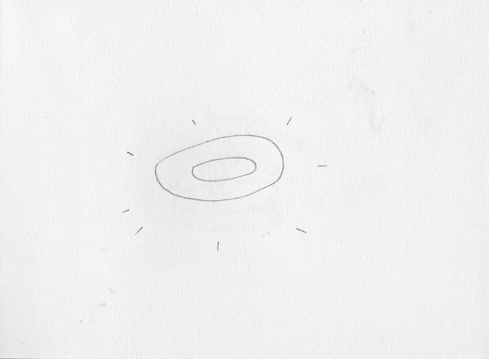
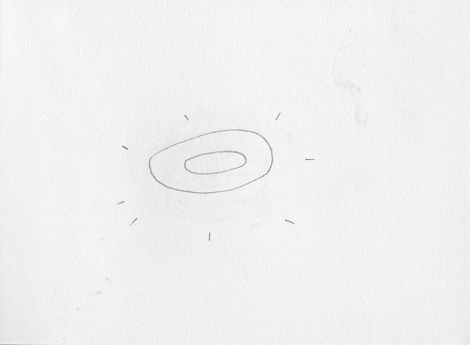
 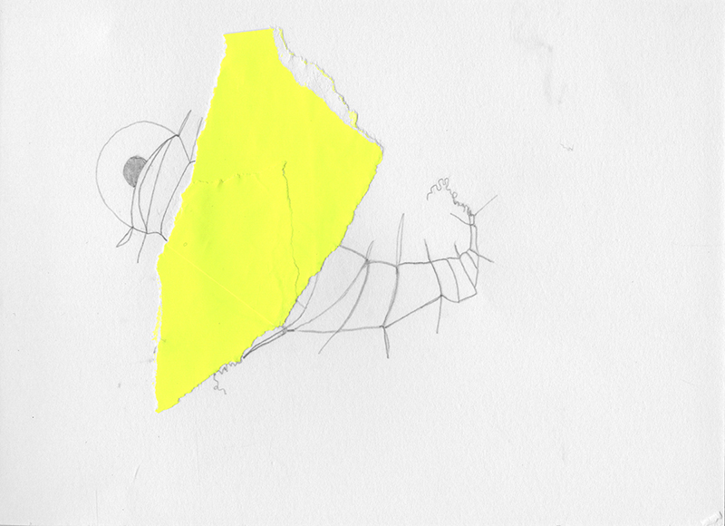
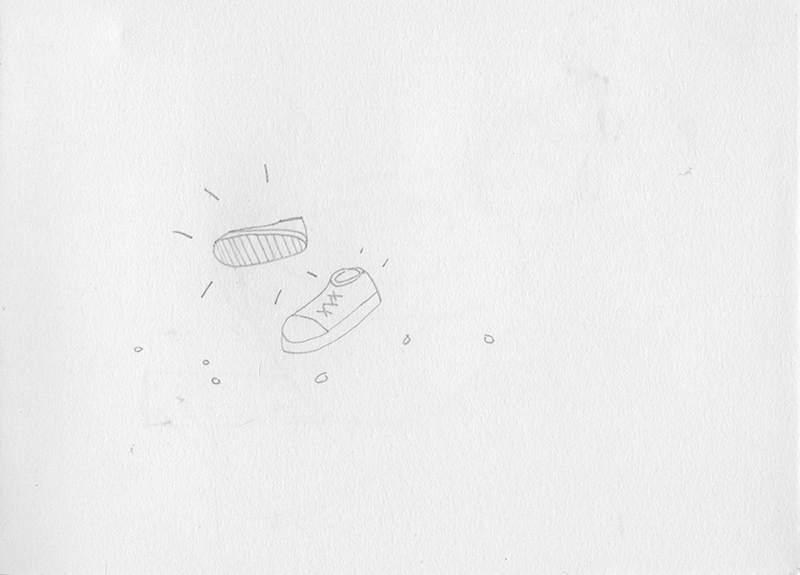
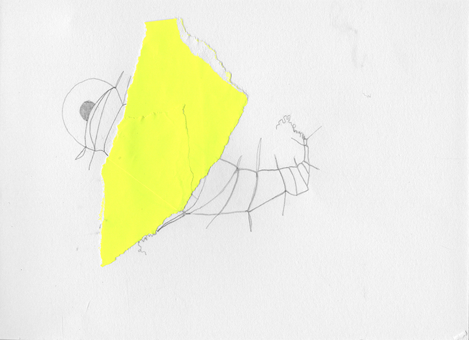
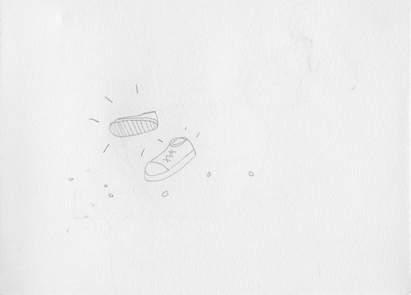


 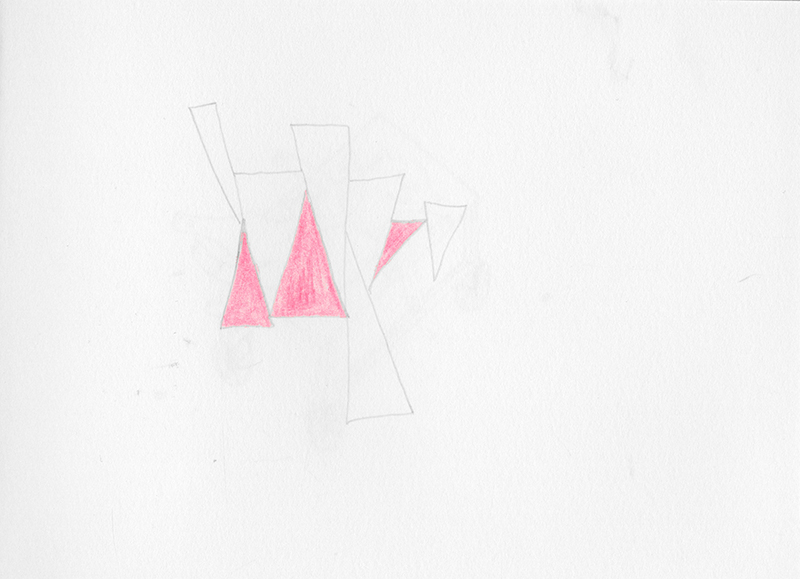
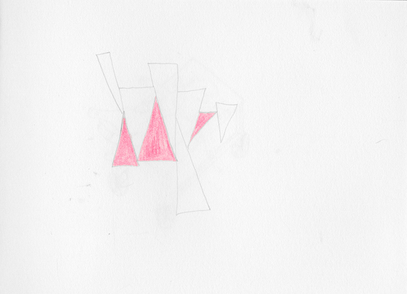


 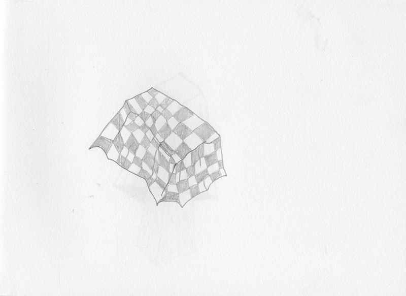
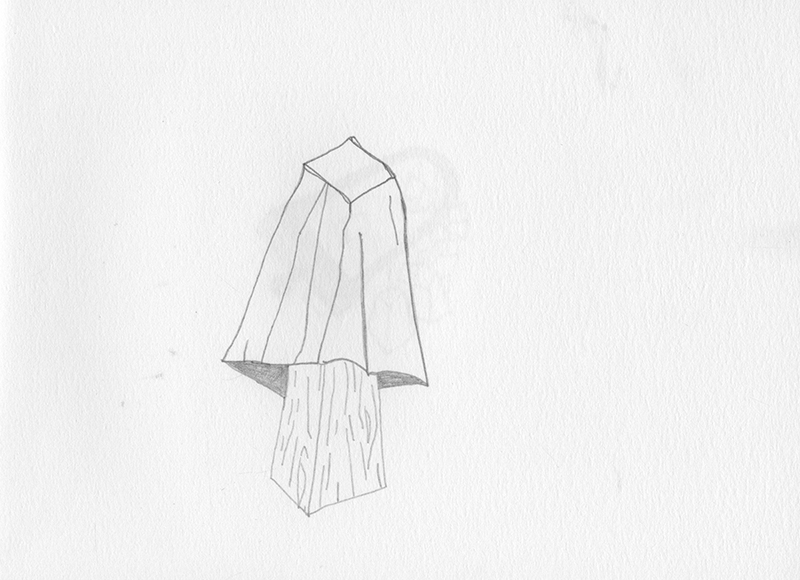
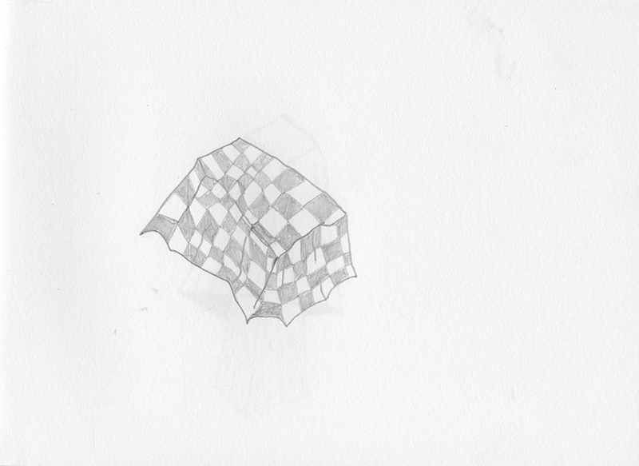
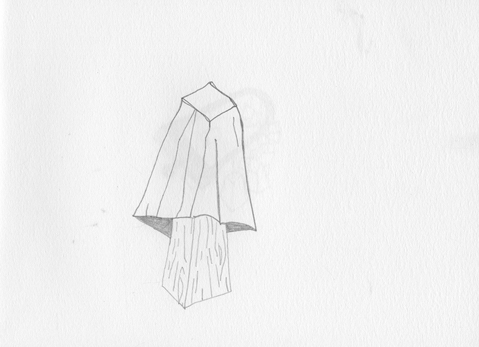


 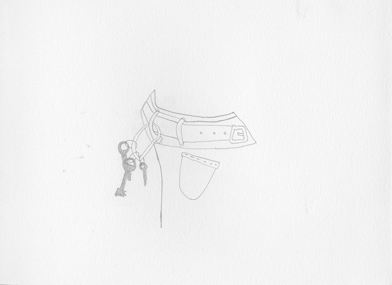
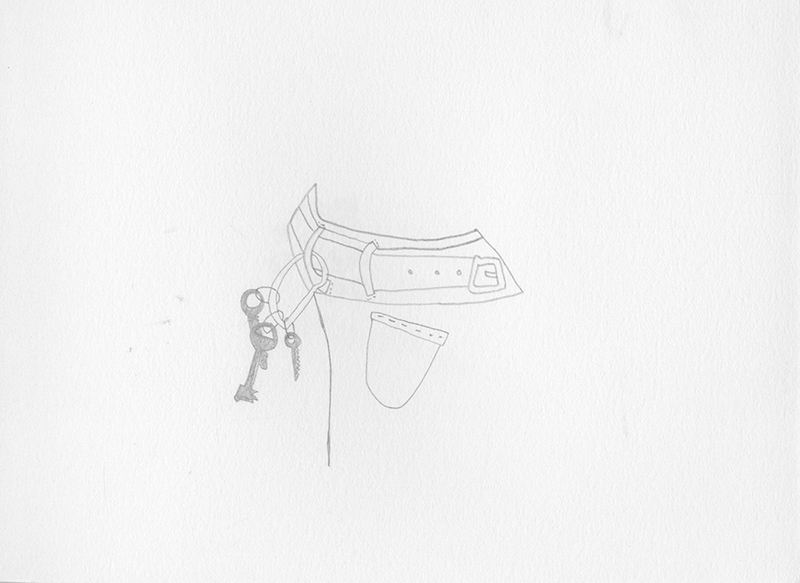
 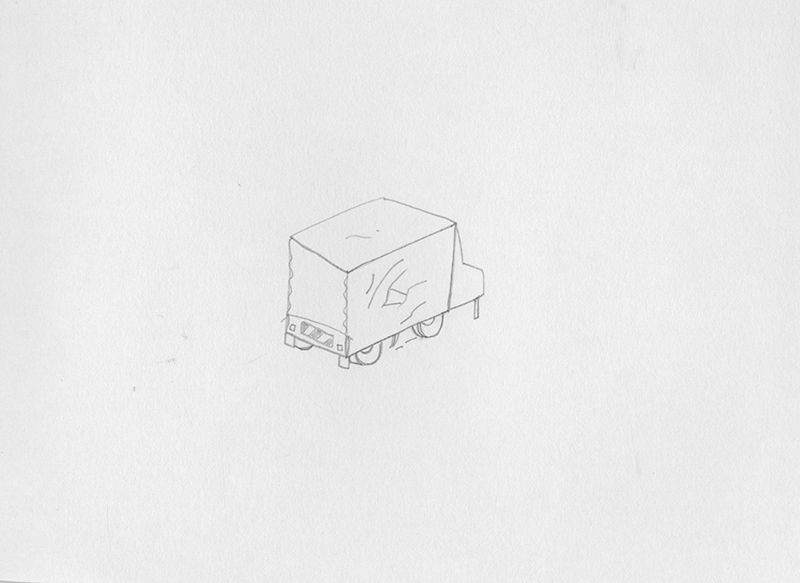
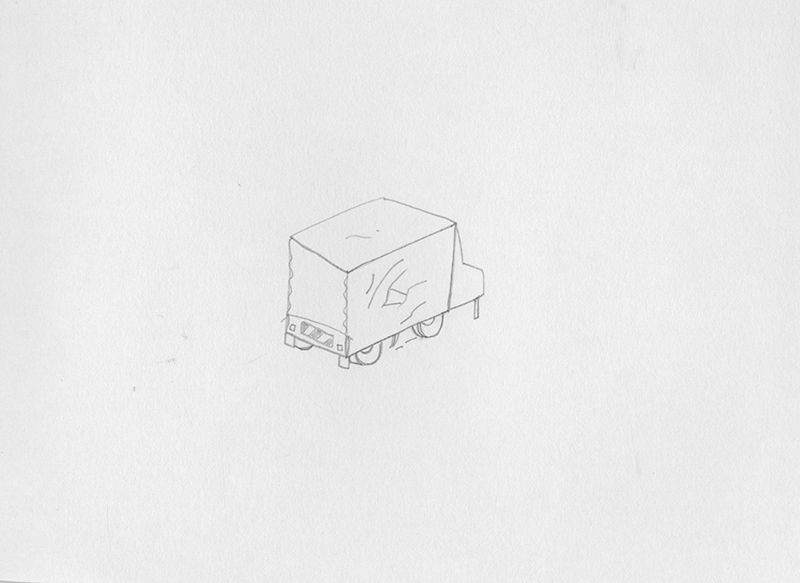


15.05.2013 07:42
16.05.2013 05:38
16.05.2013 06:11
17.05.2013 08:56
18.05.2013 07:52
19.05.2013 08:50
20.05.2013 08:42
21.05.2013 09:06
22.05.2013 08:09
23.05.2013 08:59
24.05.2013 07:01
24.05.2013 07:24
25.05.2013 17:31
26.05.2013 08:59
27.05.2013 08:26
30.05.2013 07:47
31.05.2013 07:51
03.06.2013 08:25
05.06.2013 07:59
06.06.2013 07:31
08.06.2013 06:56
17.06.2013 08:32
24.06.2013 07:37
24.06.2013 13:01
13.07.2013 10:31
13.07.2013 11:03
16.07.2013 17:06
23.07.2013 10:41
30.07.2013 07:01
30.07.2013 07:02
01.08.2013 11:31
03.08.2013 08:21
04.08.2013 07:21
06.08.1013 07:25
07.08.2013 08:56
10.08.2013 17:30
15.08.2013 08:30
23.08.2013 06:59
30.08.2013 08:39
01.09.2013 08:30
22.09.2013 09:00
24.09.2013 08:00
25.09.2013 07:50
26.09.2013 08:10
30.09.2013 17:50
01.10.2013 07:40
01.10.2013 14:00
03.10.2013 08:35
04.10.2013 09:00
05.10.2013 08:45
09.10.2013 08:25
15.10.2013 09:01
03.11.2013 08:25
Aha Moment und Assoziation
Überwindung von Zeit ist die Bündelung intensiven Erlebens
Ein Aha Moment taucht plötzlich auf.
Ein Aha Moment evoziert ein Glücksgefühl, das Gefühl vollkommener Euphorie für diesen Moment – fast gleichzeitig mit dem Bewusstsein, eine Lösung gefunden zu haben.
Wo liegt die Grenze zwischen guter Idee und Aha Moment?
Eine Idee kann ein Vorschlag sein.
Ein Aha Moment ist Idee und Beschluss zugleich.

Zukunft planen
In dem Teil Zukunft planen geht es um Möglichkeiten und Grenzen die Zukunft zu antizipieren: flüchtig versus überdauernd – spontan versus rigide – gleichzeitig versus nacheinander.
Während in Alltagsprophezeiungen flüchtig hingeworfene Notizen zur Strukturierung des Alltag im Fokus stehen, stellt das 28tagebuch ein einmonatiges Experiment dar, das ein vollkommen vorstrukturiertes Nacheinander aller Aktivitäten und aller Handlungen erzwang.
Alltagsprophezeiungen und Zwillingsnotiz
28tagebuch
28 Tage geplant
28 Tage keine Gleichzeitigkeit
28 Tage keine Spontaneität
Tagesplan und Reflexion
Tag 1
......................................................................................................................................
Impressum
Katja Marie Voigt
Ganghoferstraße 2
10243 Berlin
mail(at)marieundich.de